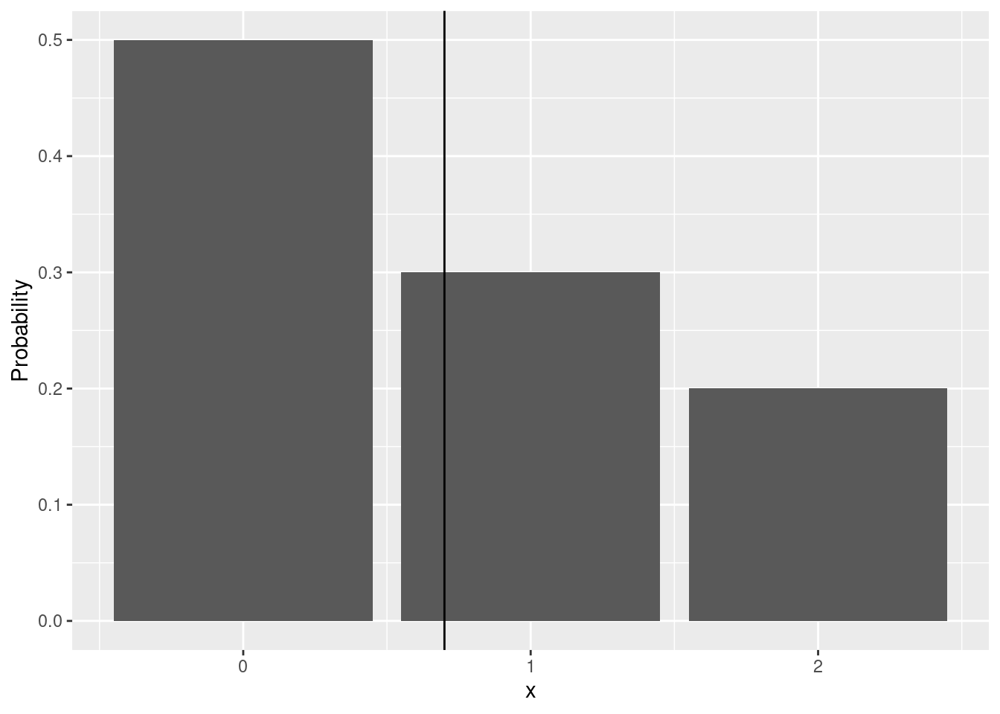

## First, load the tidyverse package## If the package is not installed, uncomment the next line and run the code chunk again## install.packages("tidyverse")library(tidyverse)
Imagine a game where you flip a single coin once. The possible outcomes are head (H) and tail (T). The set of all possible outcomes of the game is called the sample space of the experiment. We will denote this set with \Omega. For a single coin toss game, the sample space is \Omega = \{\text{heads}, \text{tails}\}.
Definition 1.1 (Probability) Let \Omega denote the sample space of a random experiment. Let A \subseteq \Omega and B \subset \Omega be two disjoint events (i.e. A \cap B = \varnothing). Disjoint events are events that cannot co-occur. A probability measure on this space has the following properties:
Theorem 1.1 (Probability of complementary sets) Let \Omega be a sample space, let A \subseteq \Omega be a subset of the sample space, and let \bar{A} = \Omega \setminus A be the complement of A in \Omega. Then the probability of the complementary set is given by:
P(A) = 1 - P(\bar{A})
Proof. For the proof note that A and \bar{A} are disjoint by definition (A \cap \bar{A} = \varnothing). Using the additivity of probability together with the unit probability of the sample space \Omega from Definition 1.1, it follows that:
Example 1.1 (Weather forecast) The weather forecast for the next day shows that it will be raining (A) with probability P(A) = 0.3. The sample space is \Omega = \{A, \bar{A}\} and the probability of not raining (\bar{A}) is then P(\bar{A}) = 1 - 0.3 = 0.7.
Example 1.2 (Dice) In a game where you roll a (6-sided) dice once the sample space is \Omega = \{1, 2, 3, 4, 5, 6\}. Denote the outcome of a roll with X and assume that the probability of each outcome is equal: P(X = i) = 1 / 6, i = 1,2,\ldots,6. The probability of the event X = 1 is then P(X = 1) = 1/6. The probability of the event “outcome is not one” is P(X \neq 1) = P(X > 1) = 5 / 6.
See Bertsekas and Tsitsiklis (2008) (Chapter 1) for a more thorough treatment of the subject.
1.2 Discrete distributions
When we presented the axioms of probability we mentioned the concept of a sample space and probability. For the sake of brevity we will skip almost all of the set theoretic foundation of probability measures and will directly introduce the concept of a random variable.
Let us go back to the roots of probability theory that date back at least to the 17th century and the study of games of chance (gambling) (Freedman, Pisani, and Purves 2007, 248). Almost all introductory text on probability theory start with an example of some simple game of chance. We will follow this example, because it is easy to understand a simple game and the mathematical concepts involved. Later we will see how we can apply the concepts developed here to an extremely broad range of problems.
1.3 Discrete Random Variables
Imagine that you are about to buy a lottery ticket that costs 1 EUR. Until you buy and scratch the ticket you don’t actually know how much you will win, but before you commit to the purchase you may wonder what winnings you should expect. Without knowing the rules of the lottery you would be completely in the dark about your prospects, so let us assume that you actually know how the lottery works.
From our point of view the rules of the game are completely determined by two things. The first one is the set of possible outcomes (the sample space) of the lottery and let’s assume that each ticket can win 0 EUR, 1 EUR or 2 EUR. Notice that the set of possible values is finite as there are only three possible outcomes. Let us write X for the (yet unknown) winning from our lottery ticket. In lottery games the value of X depends on some random mechanism (for example drawing numbered balls, spinning a wheel, etc.), therefore it is a function of the outcome of this random mechanism. We will call functions like Xrandom variables. For the most part we will not refer the underlying random mechanism and will simply focus on the distribution of the possible values of X. The second part of the rules is how often winnings of 0 EUR, 1 EUR and 2 EUR occur when you repeatedly play the game. Obviously, a game where half of the tickets win 2 EUR is quite different from a game where only one out of 100 tickets wins 2 EUR.
Table 1.1: Distribution of outcomes for two games of chance. Possible outcomes and probabilities for each outcome.
Winnings(x)
P(x)
Winnings(y)
P(y)
0 EUR
0.5
0 EUR
0.5
1 EUR
0.3
1 EUR
0.1
2 EUR
0.2
2 EUR
0.3
Let us focus on the first game with probabilities (0.5, 0.3 and 0.2) and develop some intuitive understanding of these quantities. You can think about the probabilities in Table 1.1 as theoretical proportions in a sense that if you play the lottery 100 times you would expect to win nothing (0 EUR) in about 50 games, 1 EUR in about 30 games and 2 EUR in about 20 games. Notice that to expect 20 2-EUR wins out of 100 games is absolutely not the same as the statement that you will win 2 EUR in exactly 20 out of 100 games! To convince yourself look at Table 1.2 which presents the results of five simulated games with 100 tickets each. You can play with this and similar games by changing the number of tickets and the number of games in this simulation. In the first game the player had 49 tickets that won nothing, but in the second game she had only 38 0-win tickets. When we say to expect 50 0-wins out of 100 tickets we mean that the number of observed (actually played) 0-wins will vary around 50. In neither of the five simulated games was the number of 0-wins exactly equal to 50 (this is also possible, though).
Table 1.2: Simulation of five games with 100 tickets each. Number of tickets by outcome (0, 1, or 2 EUR) and average ticket win.
x = 0
x = 1
x = 2
Average winnings per ticket
Game 1
49
34
17
0.68
Game 2
38
36
26
0.88
Game 3
47
31
22
0.75
Game 4
49
26
25
0.76
Game 5
62
23
15
0.53
The probabilities in Table 1.1 completely describe the two games. The functions that assigns a probability to each possible outcome p(x) and p(y) are called probability mass functions. These functions incorporate everything there is to know about our hypothetical games. While this knowledge will not guarantee you a profit from gambling, it enables you to compute the expected value of each ticket, the probability that none of your tickets will win, etc. An important property of the probability mass function is that it is always non-negative (no negative probabilities) and that the sum of the probabilities over all possible values is exactly 1.
Definition 1.2 (Probability mass function) For a discrete random variable X with possible values x_1,\ldots,x_K a function p(x_i) that assigns a probability to the possible values of X is called a probability mass function.
\begin{align}
P(X = x_k) = p_k.
\end{align}
The probabilities are real numbers in the interval [0, 1] and need to sum to 1 over all possible values.
Note that the set of K possible values x_1,\ldots,x_K is finite. The same definition can be used for infinite sets of possible values as long as these are countably infinite but we will skip this discussion.
Example 1.3 (Probability mass function) The first game in Table 1.1 has three possible outcomes: x_1 = 0, x_2 = 1, x_3 = 2. The probability mass function is then
Just as the descriptive statistics (average, empirical median, empirical quantiles, etc.) are useful for summarizing a set of numbers we would like to be able to summarize distribution functions.
Imagine that you plan to buy 100 tickets from the first game in Table 1.1. Based on the interpretation of probabilities as theoretical proportions you would expect that 50 of the tickets will win nothing, 30 of the tickets will bring you 1 EUR and 20 of the tickets will win 2 EUR. Thus you can write the expected winnings per ticket by summing the contributions of each ticket type:
Note that the coefficients before the possible outcomes are simply their probabilities. Therefore in a game with 100 tickets you expect that each ticket will bring you 0.7 EUR (on average). Just as with the probabilities, the expected values does not tell you that your average win per ticket will be 0.7 EUR. If you take a look at the five simulated games in Table 1.2 you will notice that the realized average ticket wins are not equal to 0.7 but they vary around it. You can think about the expected value as the center of the distribution (see Table 1.2 and Freedman, Pisani, and Purves (2007), pp. 288). It is important to see that the expected value only depends on the probabilities and the possible values and it does not depend on the outcome of any particular game. Therefore it is a constant and not a random variable itself.

Figure 1.1: Probabilities plot. The black vertical line depicts the expected value.
Let us write the expected value in a more general way:
Definition 1.3 (Expected Value) For discrete random variable X with possible values x_1, x_2,\ldots,x_n the weighted average of the possible outcomes:
E(X) = \sum_{i = 1} ^ {n} x_i p(x_i)
is called the expected value of X. Sometimes we will refer to the expected value as the mean of the distribution or the mean of the random variable following the distribution.
We introduced the expected value with an example of a game with 100 tickets in order to illustrate it. You should notice from Definition 1.3 that the expected value is independent of the number of games played as it is a property of the probability mass function of the game.
Exercise 1.1 (Expected Value) Let Y be a game with possible winnings of -1, 0, and 2 EUR. The probabilities of these outcomes are P(x = -1) = 0.2, P(x = 0) = 0.7, P(x = 2) = 0.1.
Plot the PMF using a bar chart
Calculate the expected winnings of this game using Definition 1.3
Play the game using the function sample (check its documentation either by typing ?sample on the command line in R or by searching for it online). It selects size of the values specified in x according to the probabilities given in prob.
Play the game a couple of times and look at the outcomes. Compute the average winnings using mean and compare the result with the expected value that you calculated in the previous step.
1.4.1 Properties of the expected value
In the following we list a few important properties of the expected value that we will use throughout the course. In the following let X and Y be random variables with expected values E(X) and E(Y).
Theorem 1.2 (Linearity of the Expected Value) Let X and Y be two random variables. Then the expected value of their sum equals the sum of their expected values.
\begin{align}
E(X + Y) = E(X) + E(Y)
\end{align}
Theorem 1.3 (The Expected Value of a Constant) The expected value of a constant equals the constant itself. Let a be any fixed (not random) real number. Then its expected value is:
\begin{align}
E(a) = a.
\end{align}
Theorem 1.4 (Expected value of a scaled random variable) Let X be a random variable and let a be any fixed (not random) real number. Then the expected value of aX is:
Let us compare the two games in Table 1.1. Both have the same sample space (set of possible outcomes) and the same expected winnings; see Equation 1.1 and ?eq-expected-value-game-2. However, the games are not identical because their probability distributions are different. If given the choice to play only one game, which would you prefer?
The second game offers a higher probability of winning the highest prize (2 EUR) at the cost of a lower probability for the middle prize (1 EUR). In other words, it places a higher probability on extreme outcomes (far from the distribution’s center, i.e., the expected value). A summary of a distribution that measures its spread (i.e., how likely are extreme values) is the variance:
Definition 1.4 (Variance) For a discrete random variable X with possible outcomes x_1, x_2,\ldots,x_n and probability function p(x) the variance is the expected quadratic deviation from the expected value of the distribution E(X).
Exercise 1.2 Compute the variance of Y, the second game described in Table 1.1.
Solution. Var(Y) = 0.76.
Theorem 1.5 (Independence of Random Variables) Two discrete random variables X and Y with possible values x_1,\ldots,x_K and y_1,\ldots,y_L are independent if for every k and l:
Theorem 1.6 actually holds even for only uncorrelated variables. We will discuss the concept correlation later.
Theorem 1.7 (Variance of a Scaled Random Variable) Let a \in \mathbf{R} be a fixed (not random) real number and let X be a random variable with variance Var(X).
Another useful formula for working with the variance is:
Often it will be easier to compute the variance using the following decomposition: \begin{align}
Var(X) & = E(X - E(X))^2 \\
& = E\left(X^2 - 2XE(X) + E(X) ^ 2\right) \\
& = E(X^2) - E(2XE(X)) + E(E(X) ^ 2) \\
& = E(X^2) - 2 E(X)E(X) + E(X) ^ 2 \\
& = E(X^2) - E(X)^2.
\end{align}
The proof above uses the fact that E(X) is a constant and applies Theorem 1.3 and Theorem 1.4.
Bertsekas, Dimitri P., and John N. Tsitsiklis. 2008. Introduction to Probability. 2nd ed. Optimization and Computation Series. Belmont: Athena scientific.
Freedman, David, Robert Pisani, and Roger Purves. 2007. Statistics. 4th ed. New York: W.W. Norton & Co.